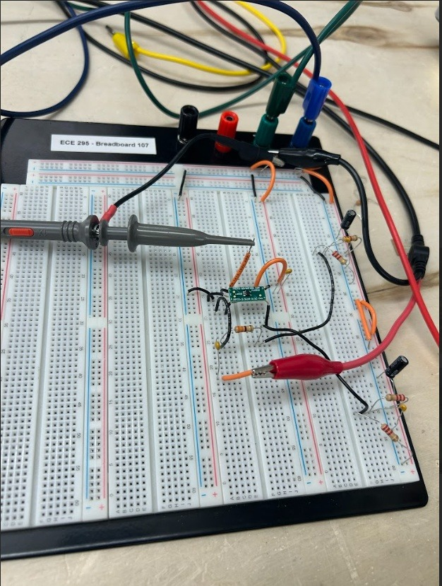
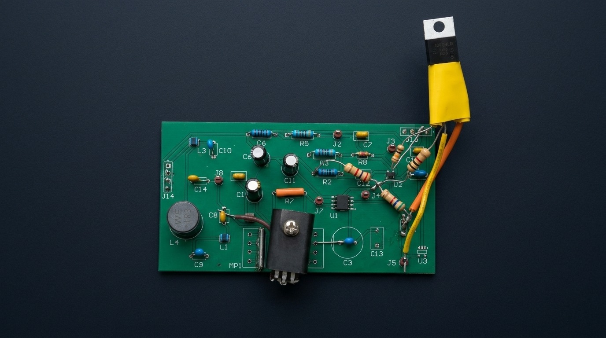

8–16 MHz Class-D SDR Power Amplifier
Designed, fabricated, and bench-verified the final RF transmit stage (Subsystem F) for a Flexible Radio Transceiver (FLRTRX). The board amplifies a weak 890 mVpp carrier into a filtered, low-distortion 14 MHz output driving a 50 Ω antenna load, with active-low transmit enable control to shut down the amplifier during receive mode.
System Architecture & PCB Design
To keep the RF transmit path reliable and straightforward to probe on the bench, the board uses a four-stage single-ended architecture:
- High-Speed Comparator (TLV3601 / ADCMP600): Converts the incoming low-amplitude RF sine wave into a 0–5 V square wave with nanosecond-scale propagation delay.
- Low-Side Gate Driver (UCC27614): Supplies high peak gate current for the switching MOSFET and provides an enable pin (
EN) controlled by an inverted/TXENsignal. - Class-D Switching Stage (IRF510): Switches the +12 V rail through an RF choke (
L2) to generate high-amplitude switching pulses. - 5-Pole LC Reconstruction Filter: Attenuates switching harmonics above 16 MHz, reconstructing a clean fundamental sine wave at
PA_OUT.


Prototyping, Bring-Up & Hardware Rework
Before spinning the PCB, individual stages were breadboarded and characterized on a Keysight waveform generator and oscilloscope. Once fabricated, initial board bring-up uncovered three hardware faults that required root-cause diagnosis on the bench and physical PCB rework:


1. Gate-Driver Decoupling Capacitor Error (C3 / C13)
In the first revision, decoupling capacitors C13 and C3 were wired in series with the +12 V rail feeding U1, blocking DC power from reaching the gate driver.
We isolated the open rail with a multimeter, shorted C13 to restore +12 V continuity, and soldered a bypass capacitor directly between VDD and a nearby GND pad.
2. Missing Copper-Pour Connections on TXEN Inverter (U3)
Pads 3 (GND) and 5 (VCC) of the SOT-23 SN74LVC1G14 inverter were not tied to the board's power and ground pours.
To restore active-low /TXEN gating without waiting for a board respin, we prototyped a discrete NPN BJT inverter (TIP29CG with a bias divider) on a breadboard, verified logic inversion, and soldered it directly onto the PCB.
3. SMD MOSFET Thermal Runaway & IRF510 Retrofit (Q1)
The original 2×2 mm SON CSD16301Q2 MOSFET repeatedly overheated and failed short between +12 V and GND across three units.
We replaced it with a through-hole IRF510 mounted to a bolted heatsink—its ~25 ns combined rise/fall time clears the 62.5 ns period at 16 MHz—and wired its gate, drain, and source to nearby filter and driver nets.

Stage-by-Stage Signal Verification (14 MHz)
Every stage was probed sequentially using a Keysight DSOX1202G oscilloscope to verify gain, switching edges, and harmonic suppression through the 5-pole filter:
| Test Point | Circuit Stage | Measured Vpp | Frequency |
|---|---|---|---|
| PA_IN_P | Mainboard RF Input | 890 mVpp | 14.00 MHz |
| J4 | Comparator Output (PWM) | 5.39 Vpp | 14.04 MHz |
| J7 | Gate Driver Output (HO) | 14.7 Vpp | 14.40 MHz |
| J8 | MOSFET Drain Switching Node (HS) | 28.7 Vpp | 14.04 MHz |
| C9 | Mid-Filter (After L-Match) | 30.2 Vpp | 14.00 MHz |
| PA_OUT | Final Output (Post-Attenuator) | 221 mVpp (22.1 Vpp) | 14.00 MHz |
Harmonic Distortion & Thermal Verification
FFT measurements at 14 MHz recorded the fundamental at −23.6 dBV with harmonics suppressed down to −67.1 dBV (2nd), −74.5 dBV (3rd), −79.3 dBV (4th), and −79.8 dBV (5th), yielding 0.73% THD—well below the 10% limit.
Thermal imaging with a Keysight U5855A after 1 minute of continuous transmit operation confirmed that the three highest-dissipation components—the IRF510 MOSFET, L4 filter inductor, and U1 gate driver—all stabilized safely between 41 °C and 44 °C.


Live SDR Integration Demo
Mounted onto the full FLRTRX transceiver mainboard, the reworked power amplifier successfully transmitted a live RF carrier on the bench: